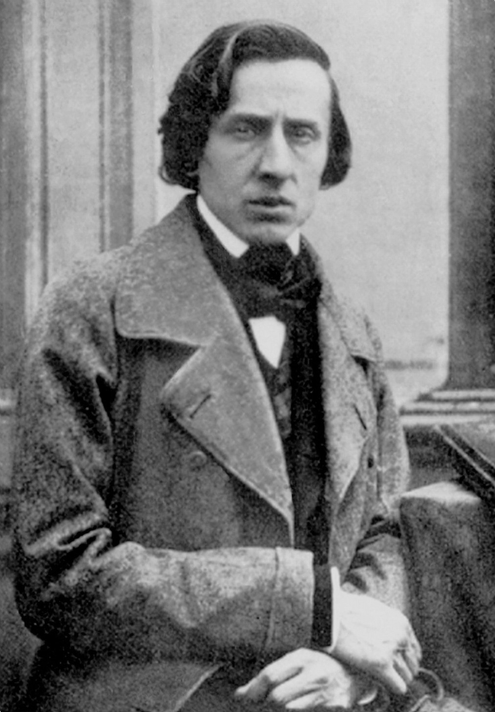
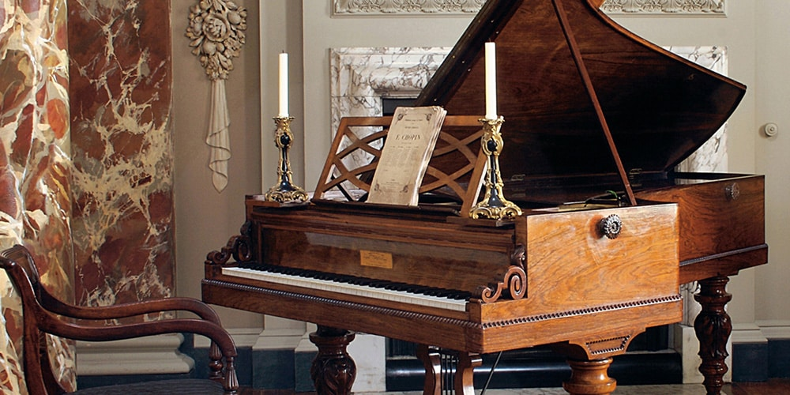
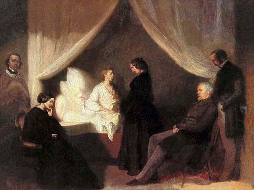

Frederic Chopin was a Polish-born pianist and composer of matchless genius in the realm of keyboard music. As a pianist, his talents were beyond emulation and had an impact on other musicians entirely out of proportion to the number of concerts he gave - only 30 public performances in 30 years of concertizing. No one before or since has contributed as many significant works to the piano's repertoire, or come closer to capturing its soul.

Chopin's mother was Polish, his father a Frenchman who had come to Poland as a young man and held jobs as a bookkeeper and tutor before marrying and settling in Warsaw. Young Frederic studied piano with Wojciech Zywny and harmony and counterpoint with Jozef Elsner, gave his first concert when he was 8, and rather quickly outdistanced his teachers. His name became known outside of Poland when his Variations, Op. 2, for piano and orchestra on Mozart's "La ci darem la mano" - when he was 17 - were published in 1830, prompting Robert Schumann's famous accolade in the Allgemeine musikalische Zeitung: "Hats off, gentlemen! A genius!" In the spring and autumn of 1830, Chopin treated the Warsaw audience to a pair of newly composed, marvelously poetic piano concertos. Seeking to expand his horizons, he left Poland for Vienna in November 1830, and after eight months there, headed for Paris. He would never again return to his native country, but Poland's loss would be Paris' gain.
By the 1830s, Paris had become the undisputed center of European culture - a hotbed of new thinking in the arts and letters and the focal point of Romanticism in music. After a sensational debut at the Salle Pleyel on Feb. 26, 1832, with Franz Liszt, Felix Mendelssohn and Luigi Cherubini among those in the audience, Chopin, three days shy of his 22nd birthday, took his place as one of the celebrities of the French capital. He found himself in such demand as a teacher that he was able to make a comfortable living, and he hobnobbed with the great artists of the day, forming particularly close friendships with Eugene Delacroix, who would paint a splendid portrait of him in 1838, and Liszt. Chopin's works from his first years in Paris include the Nocturnes of Opp. 9 and 15 (1830-32), the 12 Etudes, Op. 25 (1835-37), the Scherzo in B-flat minor, Op. 31 (1837), the Sonata in B-flat minor, Op. 35 (1837), the G minor Ballade, Op. 23. In 1836, Chopin became engaged to Maria Wodzinski, but the engagement was broken off by her family the following year.

Chopin's art reached a new plateau in the late 1830s as a result of his involvement with the writer Aurore Dudevant, six years his senior, who in 1832 had taken to calling herself George Sand. Some of his greatest works emerged as a result of the emotional contentment he felt in the early days of their nine-year liaison. They spent the winter of 1838-39 together on Majorca, living in adjacent rooms in an abandoned Carthusian monastery. Chopin endured his first major bout of tuberculosis, but though seriously ill managed to complete the 24 Preludes, Op. 28 (1838-39). During the 1840s, in spite of emotional ups and downs and recurrent illness, he produced a remarkable body of compositions that included the Ballades in A-flat, Op. 47, and F minor, Op. 52, the Mazurkas of Opp. 50, 56, 59, 63 and 67, the A-flat major Polonaise, Op. 53, the Nocturnes of Opp. 48, 55 and 62, and the Sonata in B minor, Op. 58 (1844). The best of these works are characterized by remarkable refinement and complexity, along with a newly rich sense of ambivalence. The situation with George Sand began to deteriorate in 1843, and in 1847 the break came. By then, Chopin was gravely ill; seeking escape, he left Paris in April 1848 for an extended sojourn in England and Scotland, from which he returned, exhausted, in November. He composed virtually nothing in the final year of his life.

Chopin was the first composer of genius to devote himself uniquely to the piano - every one of his works was written for it either as solo instrument or in combination with other instruments. The majority of his solo pieces are in shorter forms, and improvisatory by nature. These include 20 nocturnes, 25 preludes, 17 waltzes, 15 polonaises, 58 mazurkas and 27 etudes. In these works, especially the nocturnes, preludes and mazurkas, the emotions are fleeting, and precious because of that. Chopin also achieved success in larger forms, including the scherzo, a form he reinvented; the ballade, a genre he invented; and the sonata. The four Ballades and the Sonatas in B-flat minor and B minor are among his greatest creations, combining passionate drama and lyrical tenderness in a memorable way.
In his remarkably advanced treatment of harmony and rhythm, Chopin banished the ordinary from his music and opened the door to an emotional ambiguity that continues to intrigue listeners. He created a slimmer oeuvre than his important contemporaries, but every piece he produced was a pearl.